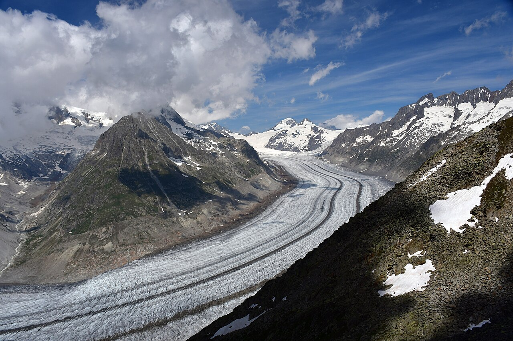

Gzzz / Wikimedia Commons · CC BY-SA 4.0
Role: Project leader
Crevasse mapping & change analysis in the Alps
Focusing on mountain glaciers in the Alps, we develop deep-learning methods to extract and map glacier crevasses from remote sensing imagery.
- Quantifying crevasse extent and geometry, including surface area, length, and size distributions.
- Comparing observations across time to track changes in crevasse area and length and characterize their spatial evolution.
- Connecting automated extraction with quantitative change analysis to better describe the evolution of glacier surface fracturing.